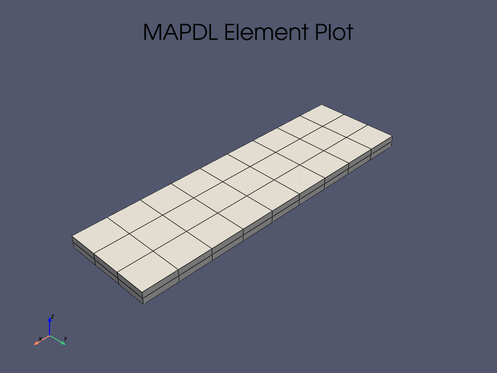

Note
Go to the end to download the full example code
基于黏结单元(或称内聚单元)的双悬臂梁试验静力模拟#
这是一个经典的双悬臂梁试验，常用于研究复合材料板的 I 型界面脱层。
Description#
Objective#
本例展示了如何使用 PyMAPDL 模拟复合材料的分层。PyDPF 模块还用于对结果进行后处理。
Problem figure#

Procedure#
启动 MAPDL 实例。
设置模型。
求解模型。
使用 PyMAPDL 绘制结果。
使用 PyDPF 绘制结果。
绘制反作用力。
Additional packages#
这些附加软件包将被导入使用：
Matplotlib 用于绘图
Pandas 用于数据分析和处理
Start MAPDL as a service#
本示例首先导入所需的软件包，然后启动 Ansys Mechanical APDL。
import os
import tempfile
from ansys.dpf import core as dpf
import matplotlib.pyplot as plt
import numpy as np
import pyvista as pv
from ansys.mapdl import core as pymapdl
# 将 MAPDL 作为服务启动
mapdl = pymapdl.launch_mapdl()
print(mapdl)
C:\Users\ff\AppData\Local\Programs\Python\Python310\lib\site-packages\ansys\tools\path\path.py:818: DeprecationWarning: This method is going to be deprecated in future versions. Please use 'get_mapdl_path'.
warnings.warn(
Product: Ansys Mechanical Enterprise
MAPDL Version: 23.1
ansys.mapdl Version: 0.67.0
Set geometrical inputs#
设置模型的几何输入。
Set up the model#
通过选择模拟的单位制和单元类型来设置模型。由于本例选择了全三维方法，因此使用 SOLID186 单元对体积进行网格划分，
并使用 TARGE170 和 CONTA174 对接触面之间的内聚单元进行建模。
Define material parameters#
复合板采用同质线性弹性正交特性建模，而内聚单元则采用双线性内聚法则。
# 进入前处理器并定义单元系统
mapdl.prep7()
mapdl.units("mpa")
# 定义 SOLID185、TARGE170 和 CONTA174 单元以及单元大小
mapdl.et(1, 185)
mapdl.et(2, 170)
mapdl.et(3, 174)
mapdl.esize(10.0)
# 定义复合板的材料属性
mapdl.mp("ex", 1, 61340)
mapdl.mp("dens", 1, 1.42e-09)
mapdl.mp("nuxy", 1, 0.1)
# 定义双线性内聚定律
mapdl.mp("mu", 2, 0)
mapdl.tb("czm", 2, 1, "", "bili")
mapdl.tbtemp(25.0)
mapdl.tbdata(1, 50.0, 0.5, 50, 0.5, 0.01, 2)
DATA FOR CZM TABLE FOR MATERIAL 2 AT TEMPERATURE= 25.0000
LOC= 1 5.00000e+01 5.00000e-01 5.00000e+01 5.00000e-01 1.00000e-02 2.00000e+00
Create the geometry in the model and meshing#
两块板被生成为两个平行六面体。然后分配复合材料属性和三维单元。
Generate cohesive elements in between the contact surfaces#
内聚单元的生成是建模方法中最精细的部分。首先，确定两个接触面，并将其定义为一个组件（本例中分别为 cm_1 和 cm_2 ）。
然后，设置 CONTA174 和 TARGE170 单元的实常数及其关键选项，以捕捉正确的行为。这些参数的说明可在 Ansys 单元文档中找到。
最后，在各自的表面 cm_1 和 cm_2 上生成单元。
# 确定两个接触区域并将其分配给组件
mapdl.allsel()
mapdl.asel("s", "loc", "z", 1.7)
areas = mapdl.geometry.anum
mapdl.geometry.area_select(areas[0], "r")
mapdl.nsla("r", 1)
mapdl.nsel("r", "loc", "x", pre_crack, length + pre_crack + eps)
mapdl.components["cm_1"] = "node"
mapdl.allsel()
mapdl.asel("s", "loc", "z", 1.7)
areas = mapdl.geometry.anum
mapdl.geometry.area_select(areas[1], "r")
mapdl.nsla("r", 1)
mapdl.nsel("r", "loc", "x", pre_crack, length + pre_crack + eps)
mapdl.components["cm_2"] = "node"
# 在生成 TARGE170 单元之前识别所有单元
mapdl.allsel()
mapdl.components["_elemcm"] = "elem"
mapdl.mat(2)
# 指定实常数和 key 选项
mapdl.r(3, "", "", 1.0, 0.1, 0, "")
mapdl.rmore("", "", 1.0e20, 0.0, 1.0, "")
mapdl.rmore(0.0, 0.0, 1.0, "", 1.0, 0.5)
mapdl.rmore(0.0, 1.0, 1.0, 0.0, "", 1.0)
mapdl.rmore("", "", "", "", "", 1.0)
mapdl.keyopt(3, 4, 0)
mapdl.keyopt(3, 5, 0)
mapdl.keyopt(3, 7, 0)
mapdl.keyopt(3, 8, 0)
mapdl.keyopt(3, 9, 0)
mapdl.keyopt(3, 10, 0)
mapdl.keyopt(3, 11, 0)
mapdl.keyopt(3, 12, 3)
mapdl.keyopt(3, 14, 0)
mapdl.keyopt(3, 18, 0)
mapdl.keyopt(3, 2, 0)
mapdl.keyopt(2, 5, 0)
# 在 cm_1 上生成 TARGE170 单元
mapdl.nsel("s", "", "", "cm_1")
mapdl.components["_target"] = "node"
mapdl.type(2)
mapdl.esln("s", 0)
mapdl.esurf()
# 在 cm_2 上生成 CONTA174 单元
mapdl.cmsel("s", "_elemcm")
mapdl.nsel("s", "", "", "cm_2")
mapdl.components["_contact"] = "node"
mapdl.type(3)
mapdl.esln("s", 0)
mapdl.esurf()
GENERATE ELEMENTS ON SURFACE DEFINED BY SELECTED NODES
TYPE= 3 REAL= 1 MATERIAL= 2 ESYS= 0
NUMBER OF ELEMENTS GENERATED= 21
Generate boundary conditions#
指定边界条件，复制实际测试条件。固定两块复合板的一端，防止其沿 x、y 和 z 轴平移。在板的另一端，应用位移条件来模拟界面裂缝开口。
这些条件适用于分别位于以下 (x, y, z) 坐标的几何边缘对应的顶部和底部节点：(0.0, `y`, 0.0) 和 (0.0, `y`, 3.4) 。
为了更快地识别承受反作用力的节点，为这些节点组分配了两个不同的组件。
# 应用两个位移条件
mapdl.allsel()
mapdl.nsel(type_="s", item="loc", comp="x", vmin=0.0, vmax=0.0)
mapdl.nsel(type_="r", item="loc", comp="z", vmin=2 * height, vmax=2 * height)
mapdl.d(node="all", lab="uz", value=d)
mapdl.components["top_nod"] = "node"
mapdl.allsel()
mapdl.nsel(type_="s", item="loc", comp="x", vmin=0.0, vmax=0.0)
mapdl.nsel(type_="r", item="loc", comp="z", vmin=0.0, vmax=0.0)
mapdl.d(node="all", lab="uz", value=-10)
mapdl.components["bot_nod"] = "node"
# 应用固定条件
mapdl.allsel()
mapdl.nsel(
type_="s",
item="loc",
comp="x",
vmin=length + pre_crack,
vmax=length + pre_crack,
)
mapdl.d(node="all", lab="ux", value=0.0)
mapdl.d(node="all", lab="uy", value=0.0)
mapdl.d(node="all", lab="uz", value=0.0)
mapdl.eplot(
plot_bc=True,
bc_glyph_size=3,
title="",
)
Solve the non-linear static analysis#
运行非线性静态分析。为使裂缝开裂过程顺利进行并促进静态求解器的收敛，设置 100 个子步。
# 进入求解器并定义分析设置
mapdl.allsel()
mapdl.finish()
mapdl.run("/SOLU")
mapdl.antype("static")
# 激活非线性几何
mapdl.nlgeom("on")
# 设置荷载子步
mapdl.autots(key="on")
mapdl.nsubst(nsbstp=100, nsbmx=100, nsbmn=100)
mapdl.kbc(key=0)
mapdl.outres("all", "all")
# Solve
output = mapdl.solve()
Postprocessing#
使用 PyMAPDL 和 PyDPF 进行后处理。
Postprocess results using PyMAPDL#
本节介绍如何使用 PyMAPDL 对结果进行后处理。由于测量分层长度非常重要，因此需要绘制内聚损伤参数。虽然损伤参数是一个单元参数，但结果是以节点结果的形式提供的。
因此，这里只列出了 4 节点内聚单元 NMISC = 70 中一个节点的结果。其他节点的结果见 NMISC = 71、72、73 。
您可以通过表格（或数组）的形式从求解模型中获取实际的损伤参数节点值。
# 进入后处理器
mapdl.post1()
# 选择子步
mapdl.set(1, 100)
# 选择 ``CONTA174`` 单元
mapdl.allsel()
mapdl.esel("s", "ename", "", 174)
# 绘制单元值
mapdl.post_processing.plot_element_values(
"nmisc", 70, scalar_bar_args={"title": "Cohesive Damage"}
)
# 提取损伤参数的节点值
mapdl.allsel()
mapdl.esel("s", "ename", "", 174)
mapdl.etable("damage", "nmisc", 70)
damage_df = mapdl.pretab("damage").to_dataframe()
Postprocessing results using PyDPF#
使用 PyDPF 将整个模拟过程中的裂缝开口以动画的形式可视化。
temp_directory = tempfile.gettempdir()
rst_path = mapdl.download_result(temp_directory)
dpf.core.make_tmp_dir_server(dpf.SERVER)
if dpf.SERVER.local_server:
path_source = rst_path
else:
path_source = dpf.upload_file_in_tmp_folder(rst_path)
# 建立模型
model = dpf.Model(path_source)
# 获取整个模型的网格
meshed_region = model.metadata.meshed_region
# 获取内聚单元网格
mesh_scoping_cohesive = dpf.mesh_scoping_factory.named_selection_scoping(
"CM_1", model=model
)
result_mesh = dpf.operators.mesh.from_scoping(
scoping=mesh_scoping_cohesive, inclusive=0, mesh=meshed_region
).eval()
# 获取每个网格的坐标字段
mesh_field = meshed_region.field_of_properties(dpf.common.nodal_properties.coordinates)
mesh_field_cohesive = result_mesh.field_of_properties(
dpf.common.nodal_properties.coordinates
)
# 获取 NMISC 结果的索引
nmisc_index = 70
# 生成损伤结果运算符
data_src = dpf.DataSources(path_source)
dam_op = dpf.operators.result.nmisc(data_sources=data_src, item_index=70)
# 生成位移运算符
disp_op = model.results.displacement()
# 创建求和运算符，计算第 n 步的更新坐标
add_op = dpf.operators.math.add(fieldA=mesh_field)
add_op_cohesive = dpf.operators.math.add(fieldA=mesh_field_cohesive)
# 实例化 PyVista 绘图仪并开始创建 GIF
plotter = pv.Plotter(notebook=False, off_screen=True)
plotter.open_gif("dcb.gif")
# 将梁网格添加到场景
mesh_beam = meshed_region.grid
plotter.add_mesh(
mesh_beam,
lighting=False,
show_edges=True,
scalar_bar_args={"title": "Cohesive Damage"},
clim=[0, 1],
opacity=0.3,
)
# 将接触网格添加到场景
mesh_contact = result_mesh.grid
plotter.add_mesh(
mesh_contact,
opacity=0.9,
scalar_bar_args={"title": "Cohesive Damage"},
clim=[0, 1],
scalars=np.zeros((mesh_contact.n_cells)),
)
for i in range(1, 100):
# 获取位移
disp = model.results.displacement(time_scoping=i).eval()
# 获取更新的坐标
add_op.inputs.fieldB.connect(disp[0])
disp_result = add_op.outputs.field()
# 获取内聚层的位移
disp = model.results.displacement(
time_scoping=i, mesh_scoping=mesh_scoping_cohesive
).eval()
# 获取内聚层的更新坐标
add_op_cohesive.inputs.fieldB.connect(disp[0])
disp_cohesive = add_op_cohesive.outputs.field()
# 获取损伤区域
dam_op.inputs.time_scoping([i])
cohesive_damage = dam_op.outputs.fields_container()[0]
# 更新坐标和标量
plotter.update_coordinates(disp_result.data, mesh=mesh_beam, render=False)
plotter.update_coordinates(disp_cohesive.data, mesh=mesh_contact, render=False)
plotter.update_scalars(cohesive_damage.data, mesh=mesh_contact, render=False)
plotter.write_frame()
plotter.close()

绘制底部节点的反作用力图
mesh_scoping = model.metadata.named_selection("BOT_NOD")
f_tot = []
d_tot = []
for i in range(0, 100):
force_eval = model.results.element_nodal_forces(
time_scoping=i, mesh_scoping=mesh_scoping
).eval()
force = force_eval[0].data
f_tot += [np.sum(force[:, 2])]
d = abs(
model.results.displacement(time_scoping=i, mesh_scoping=mesh_scoping)
.eval()[0]
.data[0]
)
d_tot += [d[2]]
d_tot[0] = 0
f_tot[0] = 0
fig, ax = plt.subplots()
plt.plot(d_tot, f_tot, "b")
plt.ylabel("Force [N]")
plt.xlabel("Displacement [mm]")
plt.show()
Animate results using PyDPF with .animate() method#
使用 PyDPF 方法 FieldsContainer.animate() 在整个模拟过程中以动画形式直观显示裂缝扩展的过程。
disp = model.results.displacement.on_all_time_freqs.eval()
camera_pos = disp.animate(
scale_factor=1.0,
save_as="dcb_animate.gif",
return_cpos=True,
show_axes=True,
)

Exit MAPDL
mapdl.exit()
try:
os.remove(path_source)
except (FileNotFoundError, PermissionError):
pass
Total running time of the script: (0 minutes 45.898 seconds)